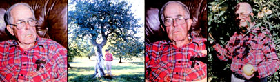
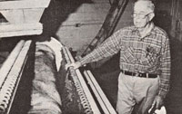
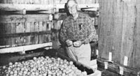

Successful Organic Farming... For 30 years!
You don't find many pioneers like A. P. Thomson anymore: He's a man who-more than 30 years ago-had the courage and foresight to buck the trend and put his maverick beliefs into practice . . . despite the suspicion and skepticism of folks who just couldn't understand his vision.
A.P., you see, is an apple grower (just as his grandfather was) . . . but-unlike most modern commercial orchardists-this Virginian has never used a single "agribiz" chemical on his 35-acre farm in the rolling countryside of the Shenandoah Valley. Every year, Thomson's Golden Acres Orchard produces seven different varieties of organically grown apples. . . in addition to unfiltered apple juice and apple cider vinegar. The pure products are sold-mostly by mail order-to customers all over the United States . . . including doctors, health food stores, co-ops, people who are allergic to common agricultural chemicals, and hundreds of individuals who simply prefer the fresh, untainted taste of A.P.'s fruit.
After years of research and experimentation, Thomson has developed a system-consisting of a number of environmentally safe treatments and methods-to maintain his orchard's soil fertility, grow hardy trees, repel insects and disease, and produce delicious apples (a fruit which is traditionally among the most difficult crops to grow without pesticide sprays).
Furthermore, A.P. is eager to pass on his vision, and to spread the word about wholistic farming to anyone who'll listen. He founded-in December of 1979-an organization called Friends of the Farm. Headed by Thomson and Illinois agriculturist Robert Rowe, FOF has already opened several demonstration sites across the country . . . giving people opportunities to learn the techniques of organic food production from actual working operations (such as A.P.'s orchard).
Last autumn, MOTHER sent horticulturist Larry Hollar and writer Jeanne Malmgren to the Old Dominion state to visit A.P. at his Front Royal home. There, the amiable Virginian took MOM's staffers on an extensive tour of his orchard, cold storage warehouse, apple packing facility, and experimental intensive garden. Afterward, Larry and Jeanne spent several hours talking with Thomson in his gracious, turn-of-the-century house, where they learned more about the orchard-keeper's past and present work . . . and about his hopes for the future. The following transcript-which was edited from that conversation-presents a portrait of the man . . . as an agricultural researcher, a humanist, and a lifelong "natural" farmer. We h ope you'll enjoy meeting A. P. Thomson.
PLOWBOY: Mr. Thomson, evidence of your devotion to the cause of organic growing is everywhere on this farm: in the acres of healthy, unsprayed trees . . . in the storage warehouse full of fragrant, wholesome fruit . . . even in the 100-square-foot intensive vegetable plot in the back yard. Can you tell us a little about the events that led to your establishing a wholistic apple orchard?
THOMSON: It was a long road that brought me here. Believe it or not, when I was young I wanted to be a doctor. In fact, I majored in chemistry at Washington and Lee University, and even won an academic scholarship to Harvard Medical School. But-since we were right in the middle of the Depression then-my daddy, who was a farmer, couldn't get up the money for my room and board. So I went to Washington instead, and found a job at the Bureau of the Mint . . . where I worked as a chemist until World War II broke out.
During that conflict, I joined the Navy and spent a couple of years at Pearl Harbor. While I was there, I often spent my free time leafing through books in the PX . . . and that's how I stumbled onto Louis Bromfield's farming classic, Pleasant Valley.
Well sir, that little book really lit a spark in me. After reading it, I understood why my father's fields had eroded so badly and why our family's farm had suffered from low productivity for years. Since I already had an interest in nature and a strong desire to go back to the farm, I began to study agriculture in earnest . . . and I followed up all the references in Bromfield's book.
First, I wrote to Sir Albert Howard-who, as you know, is considered the founder of organic gardening-in England, and that initial contact led to a long correspondence. I also got in touch with Lady Eve Balfour, the first president of Great Britain's Soil Association, and met her when she came to this country. Then I went to Pennsylvania to visit J. I. Rodale-the founder of Organic Gardening and Farming magazine-and see his experiments.
Remember, at that time the concept of organic or natural horticulture was still "new" . . . so I was very fortunate to meet and learn from the real pioneers in the field. And, as I became more knowledgeable, my interest grew and grew . . . until I finally decided, "Well, by George, I'm going to go back home and help my family make a living out of the old place." The idea of starting an apple orchard had long been on my mind . . . I guess because my granddaddy was an orchardist. But when I returned to the family farmstead, I found that it wasn't exactly an ideal place to raise fruit trees. The soil was so poor my father couldn't even grow enough corn to feed our one old cow . . . and there were washed-out gullies you could hide a house in!
So I had a real challenge facing me. I knew, first of all, that I'd have to revive that soil somehow. The top priority was to level the land enough so that I could at least get a tractor across it. With that accomplished, the next step was to work organic matter and nitrogen back into the earth . . . and the most logical way to do that, I figured, was to plant a legume crop. After doing a little research, I decided on sweet clover, for several reasons: The seed was inexpensive, I knew the plants would grow in our terrible soil, and I felt sure their root systems would help prevent erosion. I sowed some bromegrass, too, and that turned out to be a real mistake. It spread so fast that it actually became a pest. In fact, that brome is only now-after all these years-being choked out by our area's native bluegrass!
During the first year of work in the orchard, we simply mowed the sweet clover when it came up. Then, the following summer, we worked it back into the soil at about the time it bloomed, when its nitrogen content was highest. Next, we planted cowpeas, and disked them under in the fall. And, during the third autumn, we set out our first apple trees. They were then interplanted with soybeans for another three years, in order to insure a good ground cover. Each fall, we would disk the leguminous crops into the soil, giving the earth abundant organic matter and a good supply of nitrogen.
Once the trees were well established, we let the brome and the bluegrass grow up again . . . and planted all sorts of legumes as well, including alsike, sweet clover, lespedeza, and alfalfa. The goal of such interplanting”a method that I learned from Sir Albert Howard-is to create the diversity that nature loves. Instead of setting up an artificial monoculture, we let many different kinds of grasses and clovers grow right in among the trees . . . and we've never had to replace those particular crops.
Another task that was necessary, early in the game, was to "sweeten" the earth a little, since the soil of this region has a low pH. To reduce the acidity, we spread a lot of ground limestone . . . but we overdid it at first. We applied almost ten tons per acre over the course of one year, and the young York apple trees-which were just beginning to fruit-responded by producing a lot of "corking" . . . that's a tough, corklike texture in the apples. I soon realized that the condition was the result of a boron deficiency, which we'd unintentionally created by adding too much limestone to the soil.
Well, we tried to compensate for our error by working borax into the earth, but it took the orchard years to fully overcome the paralyzing effect of the single overdose of limestone. That fact, I think, serves to emphasize the importance of going into any farming venture with at least some knowledge of soil chemistry. Of course, you're bound to make mistakes when you start out-I did, in spite of my master's degree in chemistry-simply because learning a subject from a textbook is quite a different thing from actually doing it. Still, you ought to have at least a little understanding of what you're about before you start messing with the earth.
PLOWBOY: Can you tell us about the specific biological techniques you've worked out for your orchard? What do you use instead of the conventional sprays and fertilizers?
THOMSON: We first treated the land with a biodynamic field spray developed by Dr. Ehrenfried Pfeiffer, the renowned biochemist and biodynamic pioneer. That preparation was applied when we were mowing the heavy mass of grass that used to cover the area, in order to provide bacteria to break down the greenery. Later, I became interested in trace elements and their effects on the soil, so I bought a fish emulsion to "beef up" the soil's content of those important nutrients.
From such early experiments, we went on to use a concentrated seaweed extract. We started with "Sea-born" brand and then switched to "Maxicrop" . . . a Norwegian-made concentrate that we've been quite satisfied with. The seaweed is harvested in Scandinavia and sent to Great Britain, where it's processed by sun-drying. I believe that such natural dehydration is best, because the enzymes aren't lost as they can be in the high-heat drying procedures so often used in this country. I also avoid the American-made kelp concentrates, simply because there's too much water pollution along our shores. To my mind, Maxicrop is the best.
PLOWBOY: What are the benefits of a concentrated seaweed spray?
THOMSON: As I see it, there are several good reasons a grower would want to use seaweed on his or her orchard or other crops. For one thing, the marine fertilizer generally makes a plant healthier and better able to resist insect attack. A seaweed spray, you see, helps a tree-or any plant-absorb trace elements from the soil . . . and those elements, in turn, assist in the development of biotoxins, which are substances in the leaf that act as natural insect repellents. We've never had a problem with mites or aphids on our trees, and such pests often cause major problems in other orchards. Seaweed also causes a change in the configuration of leaf cells, which helps the plant withstand temperatures as much as three degrees lower than it normally could.
On the other hand, it's important not to overdo the application of concentrated seaweed, because the substance has a growth regulator in it . . . and too heavy a dose will stunt your trees' fruit. One year we had a lot of smog here, and-since seaweed is said to be a biological antidote for air pollution-I doubled our usual application of Maxicrop . . . only to end up with a lot of healthy, but marble-sized, apples on the trees!
PLOWBOY: What do you consider the optimum dosage, then, of seaweed spray?
THOMSON: We use a mixture of two ounces of the powdered concentrate to 100 gallons of water. There is a liquid form of the substance available, but it contains formaldehyde to prevent fermentation, so I prefer to use the powder. We try to get the mixture on the trees once every ten days-and no less than once every 15 days-from spring right up to harvest time. It's especially important to apply it early in the growing season-when the green first shows in the buds-since the plant's absorption rate is highest at that point in its development. The average gardener would need to use only one tablespoon of the powder in one gallon of water . . . and could spray it on his or her crops with one of the little knapsack-type misters available in garden stores and through catalogs.
We also apply a combination of the seaweed and the biodynamic field spray in the fall, just before the leaves drop. To make the preparation, we first mix five gallons of water with six to eight ounces-about a level teacup-of seaweed extract and a one-acre unit of biodynamic field spray. [EDITOR'S NOTE: Dr. Pfeiffer's product, which is sold under the brand name "B.D. Field Spray", can be ordered from, the Pfeiffer Foundation, Dept. TMEN, Threefold Farm, Spring Valley, New York 10977. A one-acre unit costs $10, plus 70 cents postage . . . and a five-unit bag sells for $45 postpaid. New York state residents should add their local sales tax.]
This liquid is left alone for two or three days . . . during that time it should be stored in an area where the temperature won't drop below 65°F, so that the foliage-decomposing organisms can grow. At the end of this inoculation period-which shouldn't be longer than three days, or you'll get too much fermentation-the five-gallon batch of concentrate is diluted with 400 gallons of water, producing enough liquid for my whole orchard. By the way, I prefer applying the spray with a blower that can reach the underside of the leaf, where all the liquid-absorbing stomata are concentrated.
This autumn spraying causes the foliage to begin bacterial decomposition as soon as it falls to the ground. By Christmas, the brittle leaves have crumbled, and are then more readily devoured by earthworms and other organisms in the soil.
PLOWBOY: What role do worms play in your organic orchard management program?
THOMSON: I first learned about the wonderful qualities of these creatures in Thomas J. Barrett's book Harnessing the Earthworm. From what I read there, and from my own experience, I've concluded that the worm is one of the most important components of an organic apple orchard ecosystem. Burrowing vertically through the ground, the little scavengers aerate the soil and bring trace elements up to the surface. They eat organic material such as grass, rotten apples, and decomposing leaves...run it through their alimentary canals . . . and then excrete a highly homogenized manure. All in all, I think the earthworm is one of the three most important factors in any natural garden. The others are the nutrient-supplying rock substances in the soil, and the organic matter that's added to make such nutrients more available.
The intensive propagation and use of earthworms is also a tremendous tool in ridding the orchard of such diseases as scab, which can be "carried"-from one season to another-by fallen leaves. The worms completely ingest the decomposing foliage and remove the danger of reinfection. In addition, they open up the soil and help assure proper circulation of water and air, thus allowing for proper moisture runoff and the oxidation necessary for organic decomposition.
At any rate, we propagated our initial supply of breeder worms in a 24-inch compost bed. At regular two-week intervals we "harvested" the top six inches of soil-which contained the worms' egg cases-from the bed. Then we spread that earth around the trees until we'd covered the whole orchard, "as signing" approximately 8,000 worms to every individual tree. The crawlers hatched out of the egg cases, began their beneficial work, and have been at it ever since. And what work they do! One million earthworms weigh one thousand pounds, and since the little organisms eat and excrete about twice their weight daily in order to survive, you can figure that a million earthworms will translocate and enrich one ton of earth a day!
PLOWBOY: Is there any one species of worm that's best to use in an orchard or garden?
THOMSON: Dr. Barrett's book says that there are some two thousand species, I think . . . but he developed one strain that's more adaptable to varying environmental conditions than are "wild" worms. That variety is called the red wiggler, and it's really the best. Wigglers reproduce faster and are less susceptible to drying out than most species. You can find the "new" worms advertised in most farm and gardening magazines.
PLOWBOY: Without using pesticides, how do you keep rodents and insects out of your orchard?
THOMSON: We actually use a combination of several techniques to control rodents . . . creatures which-by the way-represent our biggest pest problem. Now here in Virginia we have two kinds of mice: the pine mouse and the common meadow mouse. The pine mouse is particularly dangerous to apple trees, because it does all its damage underground . . . so the orchard keeper can't know anything's wrong until a couple of years after the harm's been done . . . when the tree suddenly dies! This mouse-which looks like a mole-has a very short tail, is almost blind, and lives in underground burrows. By instinct, it builds its nest right beneath the taproot of the tree . . . and then tunnels along the main support roots during the winter.
The common field mouse, on the other hand, lives primarily aboveground , in little nests it builds under clumps of grass. This particular animal likes to munch on the nutrient-containing cambium layer under the tree's bark.
To deal with both pests, we first mow all around the base of each tree to expose the field mouse nests . . . which the mice will then abandon. The suction of the mower blade also picks up the grass and blows it out to the dripline of the tree, leaving an open area that's unsuitable for creating new nests. Mowing around the trees helps to chop up any apples that may have fallen to the ground, too . . . thus making them decompose more rapidly.
Next, carefully, we put a teaspoonful of bait containing a biodegradable poison-which we get from the Fish and Wildlife Service of Amherst College-into the opening of each of the little breather holes, also uncovered by the mowing, that the pine mice dig. This toxin is a zinc phosphide preparation that will kill the rodents quickly. Now some people have criticized me for using the poison, but it breaks down very speedily into its elemental metals of zinc and phosphorus, both of which are beneficial plant foods. Until we find another control method, it's just something we have to do if we're going to produce any fruit . . . and I'm extremely careful to use it in such a way that it doesn't harm any other wildlife.
The mowing and poisoning usually need to be done only once a year-right after the apples are harvested-but it may be necessary to go back over the orchard a second time, in February, if new rodents have invaded the area.
To discourage other burrowing mammals-such as groundhogs and rabbits-we simply use a heavy gravel mulch. At the time we plant each tree, we spread about one bushel-between 50 and 100 pounds-of crushed rock around its base. I like to use a gravel called Virginia Highway No. 5, a variety that isn't overly expensive and is easy to shovel. We layer the stone mulch about three or four inches deep, and extend the covering 12 to 18 inches out from the trunk of the tree. The gravel not only discourages animals, but helps anchor the sapling and keeps down weeds and other grasses. We also protect the young tree trunks by wrapping them with flexible metal guards. The zinccoated "sleeves"-which are actually cut from the radiator grills of Mack trucks-are left in place until the tree reaches a height of five feet or so.
As for insects, our basic means of defense is simply to grow hardy trees-using such methods as the seaweed spray mentioned before-that are highly pest-resistant. However, I've been experimenting with a fascinating device I read about in Dr. Phillip Callahan's book Tuning In to Nature. The entomol ogist found that insect antennae contain extremely sensitive cells that are attracted by light waves across the entire spectrum. Following Dr. Callahan's model, I positioned a small galvanized tub-with oil in it-under two 15-watt bulbs . . . one incandescent and one fluorescent, for maximum attraction. The bugs follow their genetic impulses right to the lights, and then drown in the oil. I set up my first insect-catcher at the edge of our vegetable plot, and it caught codling moths by the hundreds last summer! So I plan to put several of the devices in the orchard next year.
PLOWBOY: How do all your organic techniques affect the production capacity of the trees? Does your farm's yield compare well to that of a chemically treated orchard?
THOMSON: Our production has averaged, over the years, about 500 bushels per acre . . . and that figure takes some normal frost damage into consideration. We have grown-when the orchard was a bit younger and at its peak of productivity-up to 26,000 bushels, or almost 750 bushels an acre! Last year we came out with 14,000 bushels . . . and the year before that, we had 15,000. But this year we lost a lot of the crop to a severe hailstorm in June, and produced only 4,000 bushels.
That natural disaster, of course, would have hurt a commercial grower just as much as it affected us . . . but the "chemical" orchards can stay ahead of us by using acidulated fertilizers and hydrogenous compounds. Such chemicals enable an orchardist almost to double the size of the fruit and the yield of his or her acreage . . . if the land has sufficient water to support the "unnatural" growth. At present, I harvest an average of 15-and a peak of 23-bushels per tree . . . while the commercial growers produce an average of 20 bushels per tree. I think that our type of operation is more efficient in the long run, though, since it's less energy-intensive and not dependent upon expensive chemicals.
Our 35 acres are planted at a spacing of 38 X 40 feet, which gives us 33 full-sized trees per acre. Some apple growers are now going to dwarf varieties, which can be planted 120 to 125 per acre. Such intensive planting, along with good climatic conditions, has the potential to allow an orchardist to raise two-maybe even three--times as many apples as is possible with standard trees!
PLOWBOY : Do you have any plans to convert your orchard to dwarf trees?
THOMSON: Yes, we're gradually going over to semidwarfs. They're about half the size of our present stock . . . so we'll eventually have twice as many trees as we do now. We're starting the process by replacing the Yorks with new semistandard Winesaps, which are planted between the existing trees. This makes a rather tight arrangement right now. However, we'll achieve correct semidwarf spacing-which will allow the trees to gather sufficient sunlight-as the old stock is removed and replaced . . . at a rate of about 100 trees a year, according to our master plan. The new varieties are on rootstocks that were developed in England . . . mostly MM 111, MM 106, and EM 26. [EDITOR'S NOTE: These designations refer to grafted rootstock developed at the British research stations of Malling Merton and East Merton.]
PLOWBOY: Why do the old trees need to be removed? Do they stop producing fruit altogether?
THOMSON: Well, an apple tree does have a finite productive life span, beyond which its fruits just keep getting smaller and scarcer. My theory is that the tree has a sort of self-destruct mechanism in it, set to go off after about 30 years. Once it reaches its peak of productivity-and the older trees in my orchard have long since done so-it starts going downhill. You can give it a shot of adrenalin, in effect, by removing some branches . . . and the tree might produce better for a while. But it's really on its way out.
PLOWBOY: Mr. Thomson, have any tests been performed on your apples to verify their purity and nutritional quality?
THOMSON: When we first started raising organically grown fruit, some people just couldn't believe that the apples hadn't been sprayed with chemical poisons . . . and there were individuals who claimed that any fruit so well-formed and goodtasting must have been treated with the regular pesticides. So, to counteract the rumors, we had the state's Department of Agriculture do a test on our apples . . . and we came out totally in the clear on the seven different chemicals that the examination was geared to find.
Our apples also underwent a laboratory analysis by Dr. Pfeiffer. That particular test involved the use of a chromatograph, which separates a compound into its individual elements. Well, Dr. Pfeiffer couldn't believe the results of his own test. He said, "There must be something wrong with my equipment . . . the apples just couldn't be that high in biological purity. Let's try them again next year, and see what happens." But the second year's results corroborated those of the first year! And Dr. Pfeiffer concluded, "Your apples have the highest rating of any I've ever tested."
Later, Dr. T.L. Senn of Clemson University conducted an analysis of our apples' trace element content-measuring such beneficial minerals as phosphorus, potassium, magnesium, calcium, zinc, copper, manganese, iron, and sodium-and he recorded that our fruit had almost three times the amounts usually found in commercially grown apples.
PLOWBOY: What about your not -so-perfect apples, the culls that don't quite live up to Golden Acres' high standards? What do you do with them?
THOMSON: There are always certain portions of the harvest that-for one reason or another-don't pass our inspection . . . although they would qualify as USDA "commercial" grade. We use the seconds to make juice and vinegar. By processing our cull-grade apples into other salable products of high quality, we're able to keep down the price of our firstrate fruit!
Golden Acres unfiltered apple juice is turned out by a stainless steel German press I bought 15 years ago. In one 30-minute run, that machine can produce 80 gallons of juice from 1,000 pounds of groundup apples. We've reached the point now where we can easily run 3,000 gallons a day . . . but we usually stop at about 1,000 gallons daily. The leftover pulp, of course, is turned into garden compost.
Our apple cider vinegar is made by a unique process that allows the liquid to ferment slowly over along period of time. Unlike most commercial operations-which use 40-foot towers, large blowers, and heat exchangers to compress the entire fermentation/oxidation process into one week-we let our juice ferment for at least a year, during which time it's never exposed to any significant changes in temperature. In fact, the temperature difference between the liquid in the barrel and the outside air is rarely more than three degrees . . . which means that none of the aromatic substances that give vinegar its quality and bouquet are lost in the process of fermentation. After the oxidation is complete, we bottle the unpasteurized elixir and ship it out to our customers.
PLOWBOY: How do you market your products?
THOMSON: We cater mostly to folks who are truly interested in natural and organically grown foods. Instead of trying to sell to large supermarkets, we concentrate on the smaller concerns, such as independently owned health food stores and buyers' coops. Such markets are proliferating all over the country, too . . . and the wholistic farmer has got to take advantage of them. There's a co-op in Norfolk, Virginia, for instance, that takes three or four thousand gallons of our juice a year . . . it's just a group of about 100 people who get together and buy in bulk.
We sell 95% of our produce by mail order, to some 1,000 customers. Now they don't all order every year, it's true, but most of them are very loyal. I'd estimate that about 100 of those men and women seek us out because they're so allergic to pesticides they can't eat ordinary apples. We ship our products to just about every state . . . except California, and that's only because the local government there won't let us send in apples unless they're fumigated. Beginning immediately after harvest, the fruit is shipped out weekly to people with prepaid orders. The surplus is stored at 40°F in our controlledatmosphere storage warehouse, and is used to fill any new orders until December 1st. Our final shipping date is December 15th. We sell apples by the bushel or the peck, juice in gallon jugs, and vinegar in quarts and gallons.
PLOWBOY: Are you aware of many other growers who are producing organically raised food for market?
THOMSON: Oh, sure. We have eight or nine people in this area alone who are raising "untreated" vegetables and fruits. There's a lady nearby who has three acres of organic strawberries . . . and a young man down in Lexington, Virginia is just starting up a 35-acre wholistic apple orchard, like this one. These people-and a number of other like-minded folks-got together four years ago to form the Virginia Association of Biological Farmers, of which I'm a member. The group consists of men and women who grow natural crops on a large scale, other people who have small organic gardens, and representatives of co-ops. We even have a committee that contacts markets, and then lets the members know where there might be a demand for their particular products. It's really a wonderful working organization, because we all try to help each other in every way that we can.
PLOWBOY: Is there anything comparable to this on the national level?
THOMSON: Well, the situation is in a state of flux right now, but I can see tremendous growth ahead for similar national organizations. I'm currently involved in the development of Friends of the Farm, which is an offshoot of an earlier group called Natural Foods Associates. For many years, the NFA-through conventions and lectures-worked to show the link between human metabolic diseases and the inferior quality of the chemically produced foods people eat.
Eventually, the group became rather top-heavy with doctors. Of the 33 people on the board of directors, only two were practicing farmers, and the emphasis came to be more and more on the medical aspects of nutrition. We were telling folks they ought to eat fruits and vegetables grown without poisons, but we weren't teaching them how to produce that sort of food!
So some of us in the organization proposed setting up demonstration gardens at the NFA headquarters in Atlanta, Texas . . . where we could instruct people in the basics of wholistic horticulture.
Unfortunately, the other members of the 'board wouldn't hear of it, as they felt that the plan would cost too much money. Not only did they veto our suggestion . . . they even closed down the single small demonstration farm they did have! So Bob Rowe and I "broke ranks" and started our own organization. Friends of the Farm was chartered in Dalton City, Illinois in December 1979 . . . for the purpose of spreading knowledge and instructing people in the techniques of growing food without chemicals. We now have about 25 practicing organic farms in the United States-mostly in the Midwest-which are all open to the public. We plan to form chapters in every state eventually, so that people can get together and exchange ideas and know-how.
Friends of the Farm would also like to set up some sort of information bank, using a computer to store agricultural information. Any organic grower who had a question could call the computer on a special WATS line and get an answer. Let's say, for example, that you live down in Hendersonville, North Carolina and have a problem with peach leaf curl . . . but all the agricultural "experts" in your area recommend only various chemical pesticides. Instead of following their advice, you could call Friends of the Farm and say, "I'm having trouble with peach leaf curl. How should I treat it?" And the computer would tell you, "Well, you do this and this, and here are your references." What a wonderful tool it could be!
PLOWBOY: Besides drawing on the collective experience of local and national organizations such as FOF, what else can a beginning farmer do to learn the basics of growing foods naturally? Do you have any words of wisdom for-specifically-the organic fruit grower who's just getting started?
THOMSON: I would recommend that the aspiring farmer first contact an available expert in the field . . . someone like Dr. Peter Escher, who studied with Dr. Pfeiffer at the Threefold Farm in New York. This "authority" should be brought in to evaluate the orchardist's whole setupthe location, the soil type, the drainage, and the climate-and make some recommendations for soil preparation, tree spacing, and so forth.
Next, the fledgling orchard-keeper should attend conferences and meetings of groups like Friends of the Farm and the National Health Federation . . . not only to pick up practical tips, but to make him- or herself known in such circles.
Beyond mastering the technical details of growing organic produce, the orchardist has got to make every effort to become familiar with the market . . . which, as I mentioned, today consists mainly of health food stores and co-op groups. But you have to make yourself and your product known , because only when you inspire people's confidence will your business thrive. It's necessary to get out and talk to folks, to explain the dangers of chemically treated produce, and to tell them how you grow things. We need the sort of personal rapport between food producers and consumers that we used to have and that now exists in China . . . where the person in the city knows who grew the food he or she is eating, and considers their relationship to be an important one.
After you've gotten started, you also have to find a market for as much of your produce as possible, whether it's of top quality in appearance or not. If you're going to keep the price of your first-grade fruits or vegetables at a realistic level, you have to find a use for the culls. A young business, you see, simply can't afford the cost of throwing out a large part of the harvest every year.
PLOWBOY: Why is it so important to you to get other people involved in chemical-free farming?
THOMSON: Well, I think that we're now living in a period when North American agricultural technology has gone wild and has no central direction. We're traveling on a collision course with catastrophe, thanks to our heavy use of herbicides and other toxic chemicals. I've heard it said that there are only three years of production left in the Great Plains-that once fertile breadbasket-simply because chemicals have burned away the topsoil.
We've been, in effect, drawing on our bank account-taking out of the soil without putting anything of value back in-for years, and it's beginning to catch up with us now. Agribusiness has become a real problem . . . so the sooner we can teach people the techniques involved in wholistic agriculture, the better. Such methods could help prevent severe shortages and starvation in the future, and might even allow us to repair some of the damage that's been done to our precious soil.
On a more personal scale, I think organic farming is important because it gives us good nutritious food. It's really true that we are what we eat . . . and it's vital to our survival that we consume pure, unpolluted nourishment. I don't think the human body was intended to get sick and break down all the time. I think it's supposed to live out its genetic potential . . . and it can , if we just take care of it and give it the right foods.
However, I don't want to be seen as a prophet of doom and gloom. I can really envision a bright future . I foresee small communities, with gardens on the periphery where people can grow their own food. I see photovoltaic cells charging the batteries for tractors and other machinery that would be needed to cultivate those plots. It's all possible . . . if we can just convince enough people of the importance of developing renewable sources of energy and applying the principles of organic farming.
PLOWBOY: What role do you hope to play in bringing about the social transformation that you've described?
THOMSON: I want to devote the rest of my life to furthering the cause of wholistic agriculture. I'm 71 years old now, and I've learned a lot of things in my time. I just want to teach people what I know, and inspire them to try new ideas themselves.
I also want to be able to tell people that, if they plan to go into this business, they shouldn't do so just to make money: They should also have a desire to help other folks and to purify the environment.
The specific thing that motivates me, I guess, is a still-growing aversion to the poisons that are commonly used on large farms. I remember that many years ago, when I had just come back from the service and moved out to this farm, I bought 25 little chicks to raise. They were out on the back porch one afternoon, and because the flies seemed particularly bad, I sprayed the area with a can of DDT. Folks had no idea-in those days-of the dangers of that potent poison. Well, within 15 minutes after I had sprayed, every one of those little chickens was on its back with its legs quivering in a final spasm!
I simply feel that all concerned people have to work to present the case for organic growing to the public, because the government often recommends agricultural chemicals for use . . . and even does so without thoroughly assessing the long-range effects of the substances on the human body! For example, the USDA claimed, for along time, that Captan was one of the safest fungicides available, and that it had a very low L.D.-that's lethal dosage-rating. Well, I recently read that Captan is being taken off the market because it's been found to belong to the thalidomide family and could be a possible cause of birth defects!
You know, not long ago a gentleman from one of the big chemical companies came knocking at my door and said, "I'm Dr. So-and-so, and I'd just like to know why in the world you go to all the trouble necessary to raise your apples naturally when it would be so much simpler to follow our recommendations and get just as good yields and make just as much money." And I told him, "Well, I want to have the comfort of knowing that if some little child picks up one of my apples and eats it without washing it first, he or she won't be in danger of being poisoned."
We should try, though, not to be too harsh in our dealings with those who practice chemical farming. Instead, we ought to attempt to understand the problems that many commercial growers have, and show them-by example-that it is possible to be successful, and to grow delicious and wholesome food, without using poisons. I guess I've mellowed in my old age . . . I can't condone the things that many agribusiness farms do, but I can applaud when they use even one less chemical. At least that's a step in the right direction.
PLOWBOY: Do you think that enough farmers will take enough such steps?
THOMSON: Yes, I firmly believe that our civilization will make the necessary decisions: It has to. I have a little theory I call Thomson's Law of Concentric Circles, which is modeled after the wave rings a rock makes when it's thrown into a still pond. If other stones are thrown into the pool, more circles will develop . . . and the expanding rings will begin to overlap, until they completely cover the surface in interlocking patterns. That's what will happen, I think, with organic farming. More and more groups of concerned people are already sending out circles of influence, and those initial rings will connect with other circles, other groups . . . until someday the message will cover the whole pond!
But it all begins with those first few circles reaching out across the surface of the water . . . the concerned individual farmer working on his or her land. And that should be everyone's first priority: to use a piece of ground-even if it's no more than a tiny backyard garden or an apartment window box-to grow at least some of his or her food without using poisonous chemicals. It isn't difficult to do so . . . all it requires is commitment. In fact, I think the essence of wholistic agriculture was well-summarized by old Confucius, who said that the best fertilizer on any farm is the footsteps of the farmer.
EDITOR'S NOTE: If you'd like to learn more about the basics of natural farming or would like to visit an operative organic farm, write to Friends of the Farm, Dept. TMEN, Route 1, Box 32, Dalton City, Illinois 61925. A one-year membership in the organization costs $15 . . . and that includes a subscription to FOF's monthly newsletter, Tuning In. Prospective wholistic farmers can also obtain the consulting services of Dr. Peter Escher through Friends of the Farm.
A.P. Thomson is always glad to hear from people interested in organic orchard-keeping. You can reach him at Golden Acres Orchard, Dept. TMEN, Route 2, Box 770, Front Royal, Virginia 22630 . . . but if you contact the busy farmer, please write (and enclose a stamped envelope) instead of calling. Mr. Thomson does not have a secretary to handle telephone calls!
|
 |
 |
 |